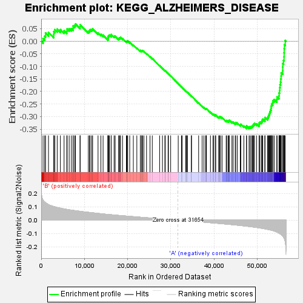
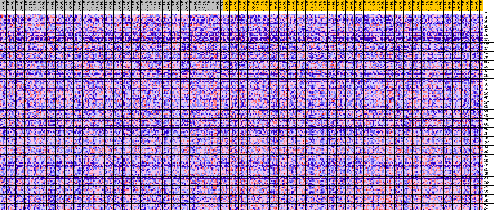
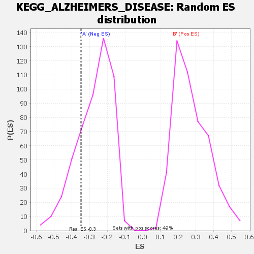

| | | Dataset | my.my.cls#B_versus_A.my.cls#B_versus_A_repos |
| Phenotype | my.cls#B_versus_A_repos |
| Upregulated in class | A |
| GeneSet | KEGG_ALZHEIMERS_DISEASE |
| Enrichment Score (ES) | -0.34809572 |
| Normalized Enrichment Score (NES) | -1.2688428 |
| Nominal p-value | 0.22113504 |
| FDR q-value | 0.61676306 |
| FWER p-Value | 0.958 |
Table: GSEA Results Summary

Fig 1: Enrichment plot: KEGG_ALZHEIMERS_DISEASE
Profile of the Running ES Score & Positions of GeneSet Members on the Rank Ordered List
| SYMBOL | TITLE | RANK IN GENE LIST | RANK METRIC SCORE | RUNNING ES | CORE ENRICHMENT | | 1 | HSD17B10 | na | 424 | 0.149 | 0.0108 | No |
| 2 | BACE1 | na | 810 | 0.135 | 0.0206 | No |
| 3 | APBB1 | na | 1005 | 0.130 | 0.0330 | No |
| 4 | CDK5 | na | 1685 | 0.116 | 0.0353 | No |
| 5 | APOE | na | 2891 | 0.102 | 0.0264 | No |
| 6 | PSEN2 | na | 2918 | 0.101 | 0.0384 | No |
| 7 | COX7A1 | na | 3157 | 0.099 | 0.0464 | No |
| 8 | MME | na | 3703 | 0.095 | 0.0483 | No |
| 9 | CALM2 | na | 4437 | 0.089 | 0.0463 | No |
| 10 | MAPK1 | na | 5290 | 0.084 | 0.0415 | No |
| 11 | PSENEN | na | 5917 | 0.080 | 0.0403 | No |
| 12 | ITPR2 | na | 6004 | 0.080 | 0.0486 | No |
| 13 | LRP1 | na | 6470 | 0.077 | 0.0498 | No |
| 14 | NDUFA8 | na | 6965 | 0.075 | 0.0503 | No |
| 15 | CALML5 | na | 7383 | 0.073 | 0.0518 | No |
| 16 | PLCB1 | na | 7387 | 0.073 | 0.0607 | No |
| 17 | GRIN2A | na | 7741 | 0.071 | 0.0633 | No |
| 18 | BID | na | 7926 | 0.070 | 0.0686 | No |
| 19 | COX6A2 | na | 8997 | 0.066 | 0.0578 | No |
| 20 | MAPT | na | 9007 | 0.066 | 0.0657 | No |
| 21 | CACNA1C | na | 10900 | 0.058 | 0.0394 | No |
| 22 | NDUFS6 | na | 11186 | 0.057 | 0.0414 | No |
| 23 | CACNA1D | na | 11304 | 0.057 | 0.0463 | No |
| 24 | PPP3CB | na | 11670 | 0.055 | 0.0466 | No |
| 25 | NAE1 | na | 11896 | 0.055 | 0.0494 | No |
| 26 | ATP2A1 | na | 13151 | 0.050 | 0.0333 | No |
| 27 | LPL | na | 13805 | 0.048 | 0.0276 | No |
| 28 | CALML6 | na | 14318 | 0.046 | 0.0242 | No |
| 29 | CALM3 | na | 15438 | 0.043 | 0.0096 | No |
| 30 | COX4I2 | na | 15457 | 0.043 | 0.0145 | No |
| 31 | NDUFB4 | na | 15467 | 0.042 | 0.0196 | No |
| 32 | SNCA | na | 15598 | 0.042 | 0.0224 | No |
| 33 | NDUFB3 | na | 15778 | 0.042 | 0.0244 | No |
| 34 | NDUFA1 | na | 16178 | 0.040 | 0.0223 | No |
| 35 | RYR3 | na | 16186 | 0.040 | 0.0271 | No |
| 36 | NDUFA5 | na | 16864 | 0.038 | 0.0198 | No |
| 37 | GRIN1 | na | 17113 | 0.038 | 0.0200 | No |
| 38 | CACNA1F | na | 17927 | 0.035 | 0.0100 | No |
| 39 | IDE | na | 18037 | 0.035 | 0.0123 | No |
| 40 | ERN1 | na | 18230 | 0.035 | 0.0132 | No |
| 41 | UQCRC2 | na | 18334 | 0.034 | 0.0155 | No |
| 42 | PPP3CC | na | 18816 | 0.033 | 0.0111 | No |
| 43 | GSK3B | na | 19705 | 0.030 | -0.0009 | No |
| 44 | FAS | na | 19843 | 0.030 | 0.0003 | No |
| 45 | ADAM17 | na | 20012 | 0.030 | 0.0010 | No |
| 46 | GAPDH | na | 20481 | 0.028 | -0.0038 | No |
| 47 | GRIN2B | na | 21313 | 0.026 | -0.0154 | No |
| 48 | NDUFB2 | na | 22128 | 0.024 | -0.0269 | No |
| 49 | NDUFB10 | na | 22935 | 0.022 | -0.0385 | No |
| 50 | APP | na | 22940 | 0.022 | -0.0359 | No |
| 51 | COX8C | na | 23271 | 0.021 | -0.0392 | No |
| 52 | SDHC | na | 23280 | 0.021 | -0.0367 | No |
| 53 | NOS1 | na | 23452 | 0.020 | -0.0372 | No |
| 54 | FADD | na | 23762 | 0.020 | -0.0403 | No |
| 55 | TNFRSF1A | na | 24369 | 0.018 | -0.0488 | No |
| 56 | COX6B1 | na | 25174 | 0.016 | -0.0611 | No |
| 57 | BAD | na | 25699 | 0.015 | -0.0686 | No |
| 58 | IL1B | na | 27408 | 0.010 | -0.0975 | No |
| 59 | NDUFV3 | na | 28057 | 0.009 | -0.1079 | No |
| 60 | ITPR1 | na | 28615 | 0.007 | -0.1169 | No |
| 61 | COX7B | na | 28711 | 0.007 | -0.1177 | No |
| 62 | NDUFA4 | na | 29360 | 0.006 | -0.1285 | No |
| 63 | PPP3R1 | na | 29444 | 0.005 | -0.1293 | No |
| 64 | NDUFB8 | na | 29954 | 0.004 | -0.1378 | No |
| 65 | CALM1 | na | 31704 | -0.000 | -0.1687 | No |
| 66 | PLCB4 | na | 32447 | -0.002 | -0.1816 | No |
| 67 | CACNA1S | na | 32612 | -0.002 | -0.1843 | No |
| 68 | COX7A2L | na | 33418 | -0.004 | -0.1980 | No |
| 69 | NDUFAB1 | na | 33635 | -0.005 | -0.2012 | No |
| 70 | NDUFA7 | na | 33642 | -0.005 | -0.2007 | No |
| 71 | UQCR10 | na | 33842 | -0.005 | -0.2036 | No |
| 72 | CDK5R1 | na | 34753 | -0.008 | -0.2188 | No |
| 73 | CASP9 | na | 34770 | -0.008 | -0.2181 | No |
| 74 | NDUFA6 | na | 36425 | -0.012 | -0.2459 | No |
| 75 | COX6B2 | na | 37235 | -0.014 | -0.2586 | No |
| 76 | MT-CO3 | na | 37650 | -0.015 | -0.2640 | No |
| 77 | MT-ATP8 | na | 38053 | -0.016 | -0.2692 | No |
| 78 | PLCB2 | na | 38162 | -0.016 | -0.2691 | No |
| 79 | COX5B | na | 38231 | -0.017 | -0.2682 | No |
| 80 | NCSTN | na | 39160 | -0.019 | -0.2823 | No |
| 81 | COX6A1 | na | 39752 | -0.021 | -0.2903 | No |
| 82 | NDUFS1 | na | 39954 | -0.021 | -0.2912 | No |
| 83 | PPP3R2 | na | 40324 | -0.022 | -0.2950 | No |
| 84 | ADAM10 | na | 40381 | -0.022 | -0.2933 | No |
| 85 | CAPN1 | na | 41077 | -0.024 | -0.3026 | No |
| 86 | CASP8 | na | 41202 | -0.025 | -0.3018 | No |
| 87 | COX6CP3 | na | 41252 | -0.025 | -0.2996 | No |
| 88 | NDUFS8 | na | 41502 | -0.025 | -0.3009 | No |
| 89 | CALML3 | na | 41850 | -0.027 | -0.3038 | No |
| 90 | NDUFB7 | na | 42796 | -0.029 | -0.3169 | No |
| 91 | NDUFA4L2 | na | 42928 | -0.030 | -0.3156 | No |
| 92 | UQCRFS1 | na | 43262 | -0.031 | -0.3177 | No |
| 93 | SDHB | na | 43439 | -0.031 | -0.3169 | No |
| 94 | NDUFA3 | na | 43509 | -0.032 | -0.3143 | No |
| 95 | NDUFS4 | na | 44127 | -0.033 | -0.3211 | No |
| 96 | NDUFA9 | na | 44405 | -0.034 | -0.3218 | No |
| 97 | NDUFS5 | na | 44890 | -0.036 | -0.3260 | No |
| 98 | NDUFB9 | na | 45003 | -0.036 | -0.3236 | No |
| 99 | MT-ATP6 | na | 45376 | -0.037 | -0.3256 | No |
| 100 | NDUFA2 | na | 46057 | -0.040 | -0.3327 | No |
| 101 | SDHA | na | 46194 | -0.040 | -0.3302 | No |
| 102 | NDUFB6 | na | 46887 | -0.043 | -0.3372 | No |
| 103 | ATP2A2 | na | 47502 | -0.045 | -0.3426 | Yes |
| 104 | MAPK3 | na | 47515 | -0.045 | -0.3373 | Yes |
| 105 | MT-CO2 | na | 48088 | -0.047 | -0.3416 | Yes |
| 106 | APH1A | na | 48344 | -0.048 | -0.3402 | Yes |
| 107 | ATF6 | na | 48631 | -0.049 | -0.3392 | Yes |
| 108 | NDUFS2 | na | 48878 | -0.050 | -0.3374 | Yes |
| 109 | UQCR11 | na | 49025 | -0.051 | -0.3337 | Yes |
| 110 | PPP3CA | na | 49166 | -0.052 | -0.3299 | Yes |
| 111 | MT-CYB | na | 49371 | -0.052 | -0.3270 | Yes |
| 112 | GNAQ | na | 49856 | -0.055 | -0.3289 | Yes |
| 113 | COX8A | na | 50424 | -0.057 | -0.3319 | Yes |
| 114 | NDUFC2 | na | 50428 | -0.057 | -0.3250 | Yes |
| 115 | NDUFV1 | na | 50617 | -0.058 | -0.3211 | Yes |
| 116 | TNF | na | 50996 | -0.060 | -0.3204 | Yes |
| 117 | NDUFB1 | na | 51097 | -0.061 | -0.3147 | Yes |
| 118 | CHP2 | na | 51267 | -0.062 | -0.3101 | Yes |
| 119 | GRIN2C | na | 51742 | -0.065 | -0.3105 | Yes |
| 120 | SDHD | na | 51788 | -0.065 | -0.3034 | Yes |
| 121 | COX4I1 | na | 52342 | -0.068 | -0.3048 | Yes |
| 122 | UQCRC1 | na | 52499 | -0.069 | -0.2990 | Yes |
| 123 | NDUFB5 | na | 52674 | -0.071 | -0.2935 | Yes |
| 124 | NDUFS3 | na | 52797 | -0.072 | -0.2868 | Yes |
| 125 | MT-CO1 | na | 52905 | -0.072 | -0.2798 | Yes |
| 126 | CASP7 | na | 53049 | -0.074 | -0.2733 | Yes |
| 127 | ATP2A3 | na | 53182 | -0.075 | -0.2665 | Yes |
| 128 | COX7B2 | na | 53203 | -0.075 | -0.2577 | Yes |
| 129 | NDUFS7 | na | 53312 | -0.076 | -0.2503 | Yes |
| 130 | COX7A2 | na | 53565 | -0.078 | -0.2452 | Yes |
| 131 | NDUFA10 | na | 53621 | -0.078 | -0.2366 | Yes |
| 132 | GRIN2D | na | 53924 | -0.081 | -0.2320 | Yes |
| 133 | UQCRQ | na | 54521 | -0.089 | -0.2316 | Yes |
| 134 | NDUFC1 | na | 54567 | -0.089 | -0.2214 | Yes |
| 135 | COX7C | na | 55013 | -0.097 | -0.2174 | Yes |
| 136 | UQCRHL | na | 55038 | -0.097 | -0.2059 | Yes |
| 137 | CASP3 | na | 55148 | -0.099 | -0.1957 | Yes |
| 138 | UQCRB | na | 55200 | -0.100 | -0.1843 | Yes |
| 139 | COX6C | na | 55260 | -0.101 | -0.1729 | Yes |
| 140 | COX5A | na | 55370 | -0.104 | -0.1621 | Yes |
| 141 | APAF1 | na | 55443 | -0.105 | -0.1504 | Yes |
| 142 | EIF2AK3 | na | 55502 | -0.107 | -0.1383 | Yes |
| 143 | CYC1 | na | 55539 | -0.108 | -0.1257 | Yes |
| 144 | BACE2 | na | 55869 | -0.117 | -0.1171 | Yes |
| 145 | PSEN1 | na | 55879 | -0.117 | -0.1029 | Yes |
| 146 | NDUFV2 | na | 55895 | -0.118 | -0.0887 | Yes |
| 147 | ITPR3 | na | 56072 | -0.126 | -0.0763 | Yes |
| 148 | CYCS | na | 56191 | -0.133 | -0.0621 | Yes |
| 149 | PLCB3 | na | 56203 | -0.133 | -0.0459 | Yes |
| 150 | UQCRH | na | 56222 | -0.135 | -0.0297 | Yes |
| 151 | CAPN2 | na | 56266 | -0.138 | -0.0135 | Yes |
| 152 | CHP1 | na | 56470 | -0.161 | 0.0027 | Yes |
Table: GSEA details [plain text format]

Fig 2: KEGG_ALZHEIMERS_DISEASE
Blue-Pink O' Gram in the Space of the Analyzed GeneSet

Fig 3: KEGG_ALZHEIMERS_DISEASE: Random ES distribution
Gene set null distribution of ES for KEGG_ALZHEIMERS_DISEASE